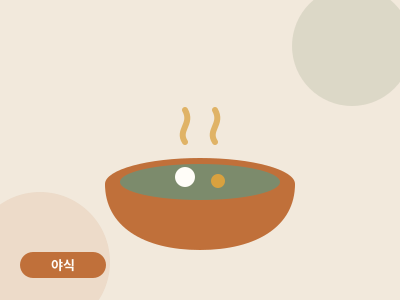

야식 · 8분 · 난이도 하
전자레인지 폭탄계란찜
불 없이 8분. 야식의 죄책감을 최소화한 국물 계란찜.

- 조리 시간
- 8분
- 난이도
- 하
- 분량
- 1인분
- 필요 화구
- 전자레인지
만드는 법
- 계란물 만들기내열 용기에 계란 3개, 물 150ml, 참치액을 넣고 젓가락으로 충분히 풉니다. 흰자 덩어리가 없어야 부드럽습니다.
- 랩 대신 접시용기 위에 접시를 뚜껑처럼 덮습니다. 랩보다 안전하고 쓰레기도 없습니다.
- 700W 3분 + 젓기전자레인지 700W에서 3분 돌린 뒤 꺼내서 한 번 크게 젓습니다. 이 '중간 젓기'가 폭탄처럼 부풀어 오르는 식감의 비밀입니다.
- 2분 추가다시 2분 돌리면 완성. 참기름과 쪽파를 올려 마무리합니다. 용기가 뜨거우니 행주로 꺼내세요.
원룸쿡의 한 끗
새우젓이 있다면 참치액 대신 0.5큰술. 야식으로 먹고 자도 부담 없는 200kcal대 레시피입니다.
새우젓이 있다면 참치액 대신 0.5큰술. 야식으로 먹고 자도 부담 없는 200kcal대 레시피입니다.